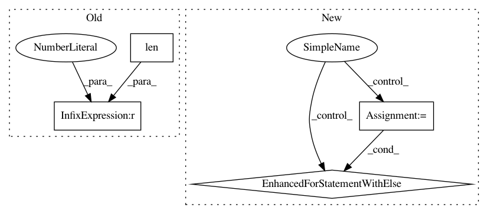

2dd49058dba6cf1527e2414221d4b08b127f96d5,mne/forward/forward.py,,_restrict_gain_matrix,#Any#Any#,1033
Before Change
raise ValueError("G.shape[0] and length of info["chs"] do not match: "
"%d != %d" % (G.shape[0], len(info["chs"])))
sel = pick_types(info, meg="grad", ref_meg=False, exclude=[])
if len(sel) > 0:
G = G[sel]
logger.info(" %d planar channels" % len(sel))
else:
sel = pick_types(info, meg="mag", ref_meg=False, exclude=[])
After Change
if len(info["chs"]) != G.shape[0]:
raise ValueError("G.shape[0] (%d) and length of info["chs"] (%d) "
"do not match" % (G.shape[0], len(info["chs"])))
for meg, eeg, kind in (
("grad", False, "planar"),
("mag", False, "magnetometer or axial gradiometer"),
(False, True, "EEG")):
sel = pick_types(info, meg=meg, eeg=eeg, ref_meg=False, exclude=[])
if len(sel) > 0:
logger.info(" %d %s channels" % (len(sel), kind))
break
else:
warn("Could not find MEG or EEG channels to limit depth channels")
sel = slice(None)
return G[sel]
@verbose
In pattern: SUPERPATTERN
Frequency: 3
Non-data size: 4
Instances
Project Name: mne-tools/mne-python
Commit Name: 2dd49058dba6cf1527e2414221d4b08b127f96d5
Time: 2019-04-24
Author: larson.eric.d@gmail.com
File Name: mne/forward/forward.py
Class Name:
Method Name: _restrict_gain_matrix
Project Name: andresriancho/w3af
Commit Name: 3805aabae59e3ba5b16364f6839c8e20b2399d71
Time: 2017-06-29
Author: andres.riancho@gmail.com
File Name: w3af/core/controllers/delay_detection/aprox_delay_controller.py
Class Name: AproxDelayController
Method Name: delay_is_controlled
Project Name: facebookresearch/pytext
Commit Name: 0823d683400f7e6d009834d13f87ffa7db2b96c7
Time: 2019-07-25
Author: egaudet@fb.com
File Name: pytext/config/serialize.py
Class Name:
Method Name: _try_component_config_from_json